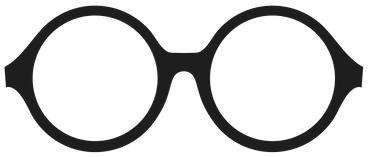

holst

A parser for Jupyter notebooks.
installation
Add the dependency to your shard.yml:
dependencies:
holst:
github: ruivieira/crystal-holstand run shards install.
examples
Parse a Jupyter notebook with
Holst::JupyterFile:
require "holst"
notebook = Holst::JupyterFile.new(file_path: "/path/to/notebook.ipynb")Print the kernel spec and name:
notebook.content.metadata.kernelspec # => "my-python-3.9
notebook.content.metadata.language # => python
Get all images in a notebook. This returns an array of
Bytes that you can save directly to a file.
counter = 1
notebook.images.each { |img|
File.write("image-#{i}.png", img)
counter += 1
}Alternatively, call export_images to bulk save.
notebook.export_images
By default images are save in a sub-folder images with
prefix images-$counter.png. You can specify other values.
notebook = Holst::JupyterFile.new(file_path: "/path/to/notebook.ipynb",
image_prefix: "diagram",
image_dest: "/some/other/path")
will save images as /some/other/path/diagram-1.png,
/some/other/path/diagram-2.png, etc.
compatibility
holst works with Jupyter notebooks with format 4+.
documentation
API documentation is available here.
A git mirror is available at https://git.sr.ht/~ruivieira/crystal-holst.